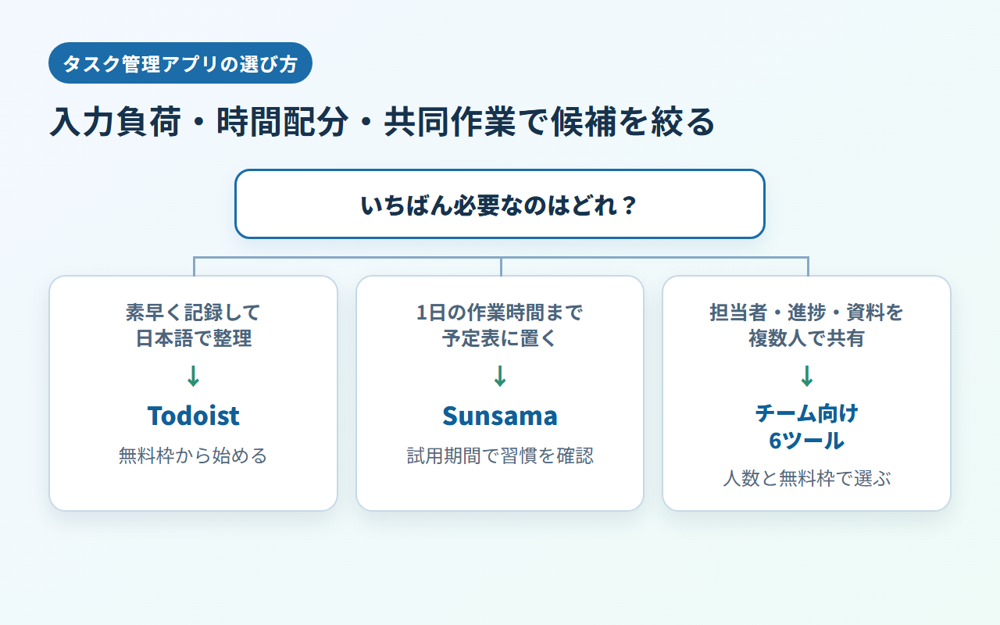

タスク管理アプリおすすめ｜個人向け2選＋共同作業向け6選を比較
タスク管理アプリは、機能数より「1人で使うのか」「予定表に作業時間まで置くのか」「担当者や資料を共有するのか」で選ぶと迷いません。
ToDoアプリとして軽く使う場合も含め、個人の仕事を整える2商材と、共同作業へ進むときの6商材を別枠で紹介します。8商材の総合順位ではなく、使い方に合う候補を絞るための比較です。
結論：1人ならTodoistかSunsama、共同作業ならチーム向けを選ぶ
素早く記録するならTodoist、1日の時間配分まで決めるならSunsamaが主候補です。 担当者、進捗、資料を複数人で共有するなら、チーム向け6商材を検討します。
- 素早い入力と日本語での整理：Todoist
- カレンダー上で仕事の時間を確保：Sunsama
- 担当者や進捗を共有：monday.com、ClickUp、Wrike、Hive、SmartSuite、Backlog
素早く記録して整理したいならTodoist
Todoistには、個人プロジェクトを5件まで作れる無料のBeginnerがあります。日本語UIと日本語ヘルプがあり、日本円決済とJCBにも対応しています。
まずは仕事や経理などを5件以内のプロジェクトに分け、無料枠で不足する機能があるかを確かめます。
1日の時間配分まで決めたいならSunsama
Sunsamaは、その日に取り組む仕事をカレンダー上で計画するデイリープランナーです。無料プランはなく、カード登録不要の14日間トライアルと、$22／ユーザー／月または$204／ユーザー／年の1プランを提供しています。
試用期間中に、タスクを記録するだけで足りるのか、毎日の計画まで続けたいのかを見極めます。
複数人で進捗を共有するならチーム向け6商材
monday.com、ClickUp、Wrike、Hive、SmartSuite、Backlogは、個人用ToDoアプリの単純な上位版ではありません。担当者、進捗、権限、関連資料をチームで管理するための製品です。
共同作業がある場合は、無料枠の人数、プロジェクト数、容量、最低契約人数から候補を絞ります。
タスク管理アプリの選び方｜入力負荷・時間配分・共同作業で絞る
共有相手の有無、入力の手数、時間配分の必要性、無料枠と日本語、対応端末の順で確認します。 使わない機能の多さで比べる必要はありません。

1人で使うか、共同作業があるかを先に決める
自分の締切や請求、執筆予定を整理するだけなら、個人向けのToDo型から始められます。「誰が担当するか」「どこまで進んだか」「資料はどこか」を共有するなら、プロジェクト管理型が必要です。
毎日入力できる手数かを確認する
候補ごとに同じ10件ほどの仕事を登録し、期限の設定と変更、今日の一覧への移動を試します。見るのは操作の速さより、思いついた仕事をその場で記録でき、未完了の仕事を見失わないかどうかです。
タスク一覧だけか、カレンダー上の時間配分まで必要かを決める
「何をするか」が分かれば動ける人はTodoistのような一覧型、取り組む時間まで決めたい人はSunsamaが候補です。毎日の計画に手間をかけたくないなら、時間配分型は過剰になることがあります。
無料枠・日本語・利用端末を契約前に確認する
無料プランと期間限定トライアルは分けて考えます。日本語UIと日本語サポートも別の条件です。
候補を絞ったら、各社が案内する対応端末を確認し、同じアカウントまたはワークスペースでタスクを1件更新して、普段使う端末間の反映を試してください。
個人・フリーランス向けの主軸2選
無料枠から整理するならTodoist、有料前提で1日の計画まで組むならSunsamaです。 役割が異なるため、料金だけで優劣は決まりません。
Todoist｜素早く記録して日本語で整理したい人向け
Beginnerは個人プロジェクト5件まで使えます。Proは7日、Businessは14日のトライアルがあり、日本語UI・日本語ヘルプ・JPY決済・JCBに対応しています。
Proは月払い$7（約1,113円）、年払い$60（約9,540円）で月$5相当（約795円）です。円換算は1ドル=159円の目安で計算し、為替で変動します。Businessは月払い$10（約1,590円）／ユーザー、年払い$96（約15,264円）／ユーザーで月$8相当（約1,272円）です。
無料枠で期限変更と今日の一覧を試し、5件のプロジェクトで整理できるかを確認してください。
Sunsama｜カレンダー上で1日の時間配分まで決めたい人向け
Sunsamaは1プラン制で、月払い$22（約3,498円）／ユーザー、年払いは月$17相当（約2,703円、年$204＝約32,436円）です。14日間トライアルはカード登録不要で、請求には銀行発行カードを使います。請求書は請求ポータルで確認できます。
解約は設定内のBillingから行い、現在の請求期間末まで利用可能です。日本語UIと日本語サポートは公式情報では確認できていないため、必要な人は試用中に画面と問い合わせ窓口を確かめてください。
14日間、実際の予定を入れて、時間配分まで続ける価値があるかを判断します。
共同作業が必要になったときのタスク管理ツール6選
担当者、進捗、権限、資料を複数人で扱う場合の6候補です。 個人向け2商材とは別枠で、人数や最低契約数を基準に比較します。
monday.com｜2人までの無料枠から共同作業を試したい
Freeは最大2席で、3ボード、3 Docs、200を超えるテンプレートを利用できます。日本語UIと公式日本語ヘルプがあり、日本からはJCBやPayPalを含む複数の決済手段を選べます。有料プランは最低3席で、その後は5席単位の席数バケット制です。料金の表示通貨と最終価格は請求国により変わるため、購入画面で確定します。
2人で案件を1つ動かし、ボード数とDocs数が足りるかを試す用途に向きます。
ClickUp｜無料枠でタスクとメンバー数を広く試したい
Free Foreverはタスク数とメンバー数が無制限ですが、ストレージは60MB、Spacesは5件です。日本語UIはベータ版として提供されています。有料のUnlimitedは年払いの月額換算で$7（約1,113円）／ユーザー、年額$84（約13,356円）、月払いは$10（約1,590円）／ユーザーです。添付ファイルを扱うなら、人数より先に容量を確認します。
無料枠で実際の資料を添付し、60MBと5件のSpacesで運用できるかを見てください。
Wrike｜日本語の公式情報を見ながらチーム導入したい
Wrikeには$0のFreeと、カード登録不要の14日間トライアルがあります。日本語UI、公式日本語サイト、日本語ヘルプがあり、年払い表示はTeam $10（約1,590円）、Business $25（約3,975円）／ユーザー／月です。Teamは2〜15ユーザー、Businessは5〜200ユーザーが対象で、最小年額はTeamが$240（約38,160円）、Businessが$1,500（約238,500円）です。
日本語の案内を読みながら担当者と進捗を設定し、有料機能が必要かを切り分けられます。
Hive｜10人までの無料枠で小規模チーム運用を試したい
Freeは最大10ワークスペースメンバー、ストレージ200MB、AIクレジット1,000で、タスクとノートは無制限です。年払い表示はStarter $5（約795円）、Teams $12（約1,908円）／ユーザー／月です。1ユーザーあたりの年額はStarterが$60（約9,540円）、Teamsが$144（約22,896円）となります。日本語UIと日本語での有人サポートは公式公開情報で確認できませんが、非対応とは断定できません。
10人以内のチームで、保存容量と画面言語が運用の支障にならないかを先に試します。
SmartSuite｜タスク以外の業務情報もまとめたい
SmartSuiteは日本語を含む15言語にUIを切り替えられます。無料プランはなく、カード不要・自動課金なしの14日間Professionalトライアルを用意しています。Teamは年払い$15（約2,385円）／席／月で最低3ユーザーのため、最小年額は$540（約85,860円）です。Professionalは年払い$32（約5,088円）／席／月で最低5ユーザーとなり、最小年額は$1,920（約305,280円）です。日本語での有人サポートは確認できていません。
試用中に業務情報までまとめる必要性を確かめ、終了後は最低利用人数を含む総額で判断します。
Backlog｜日本語と日本円でチームの課題を管理したい
現行Freeで使えるのは10ユーザー、1プロジェクトまでです。日本語UI・日本語サポートがあり、料金は日本円建てです。Starterは月払い2,700円、年払い30,780円（月換算2,565円）で30ユーザーまで、Standard以上はユーザー数無制限となります。
2027年1月1日から料金体系とFreeの条件が変わる予定です。公開または契約が同日以降になる場合は、新しいプラン条件で選び直してください。
請求書と領収書は請求画面から取得できます。現行Freeで試すなら、1プロジェクトに対象業務を絞ります。
無料で続けられるアプリと無料トライアルだけのツールを分ける
Todoist、monday.com、ClickUp、Wrike、Hive、Backlogには無料プランがあり、SunsamaとSmartSuiteは期間限定トライアルのみです。 無料で使える期間と、最初に達する上限を分けて見ます。
無料プランを継続できる6商材
- Todoist：個人プロジェクト5件
- monday.com：最大2席、3ボード、3 Docs
- ClickUp：タスク・メンバー無制限、ストレージ60MB、Spaces 5件
- Wrike：Freeは$0
- Hive：最大10メンバー、ストレージ200MB
- Backlog：現行Freeは10ユーザー、1プロジェクト
個人ならプロジェクト数、チームなら席数、添付が多い仕事なら保存容量を先に見ておきます。
期間限定トライアルで判断する2商材
SunsamaとSmartSuiteは14日間のトライアルです。どちらもカード登録は不要で、SmartSuiteは自動課金されません。継続する場合は、Sunsamaの1ユーザー単位の料金、SmartSuiteの最低利用人数を試用中に確認します。
日本から使う前に確認したい日本語・支払い・解約
日本語UI、サポート言語、請求通貨、決済手段、請求書、解約条件は別々に確認します。 画面が日本語でも、有人サポートまで日本語とは限りません。
日本語UIと日本語サポートを分けて見る
TodoistとBacklogは日本語UIと日本語の公式サポート情報があります。monday.comとWrikeも日本語UIと日本語の公式案内を用意し、ClickUpの日本語UIはベータです。SmartSuiteは日本語UIに対応しますが、日本語での有人サポートは確認できていません。SunsamaとHiveは、UIとサポートのどちらも日本語対応を確認できていません。
日本からの支払い方法と請求書を確認する
TodoistはJPYとJCB、monday.comはJCBとPayPalに対応し、両社とも請求画面から請求書を取得できます。Sunsamaは銀行発行の主要クレジットカードを受け付け、請求ポータルで請求書を確認できます。HiveとSmartSuiteも主要クレジットカードに対応し、Backlogは請求書と領収書を取得できます。
海外SaaSの税務上の扱いは契約主体や請求内容で変わるため、必要に応じて税理士に確認してください。
解約後の利用期間と返金条件を確認する
Todoistは解約後も請求期間末まで有料機能を使えます。年払いは購入・更新から30日以内なら返金を申請できますが、月払いは対象外です。Sunsama、SmartSuite、Backlogも請求期間末まで利用できます。Backlogは途中解約の返金がありません。ClickUpはダウングレード時にFreeへ移行し、新規有料購入には30日間の満足保証があります。Hiveは月払いと年払いで解約窓口が異なります。Wrikeは解約が即時有効で、アカウントは停止またはFree化される場合があり、未使用期間の返金やクレジットは原則ありません。
3日から2週間で「続けられるか」を確かめる
同じ仕事を候補へ登録し、3日、1週間、2週間の順で負担を確かめます。 最初からタグや自動化を作り込む必要はありません。
最初の3日で入力と今日の確認だけを試す
実際のタスクを10件ほど登録し、期限と優先度を設定します。3日続けて記録できなければ、機能不足より入力経路が合っていない可能性があります。
1週間で未完了タスクの繰越を確認する
未完了タスクの翌日の表示、期限変更の手数、古いタスクの見つけやすさを見ます。毎晩すべてを整理し直す必要があるなら、分類や運用ルールを減らします。
2週間で時間配分と共同作業の必要性を判断する
一覧を作っても着手できないならSunsama、担当者への確認や資料共有が増えたならチーム向け製品へ進みます。自分のタスクだけで完結するなら、多機能なプロジェクト管理へ移る必要はありません。
タスク管理アプリ・ツールのよくある質問
製品名から入るより、1人か共同作業か、無料で続けるか試用だけか、一覧か時間配分かを先に決めると選びやすくなります。
個人のタスク管理なら無料アプリで十分？
プロジェクト数、容量、共有人数が無料枠に収まり、時間配分まで管理する必要がなければ、無料アプリで足りる可能性があります。不足した条件が明確になってから有料化すると、使わない機能へ料金を払わずに済みます。
タスク管理アプリとプロジェクト管理ツールの違いは？
タスク管理アプリは主に個人のやること、期限、優先度を整理します。プロジェクト管理ツールは、複数人の担当、進捗、権限、資料までまとめる用途が中心です。
TodoistとSunsamaはどちらを選ぶ？
日本語で素早くタスクを記録したいならTodoist、取り組む時間まで毎日計画したいならSunsamaです。一覧と時間配分のどちらが必要かで決めます。
スマホとPCの両方で使えるかはどう確認する？
本記事の8商材はいずれもスマホとPCから利用できます。ただし、モバイル版とWeb・デスクトップ版では使える機能や操作が同じとは限りません。普段使う端末で同じタスクを更新し、反映と通知を試してから契約してください。
まとめ｜まずは個人向け2商材から試し、共同作業が必要なら広げる
個人のタスク整理はTodoist、時間配分まで扱うならSunsamaから検討します。 担当者、進捗、資料を共有する必要が生じたら、人数や最低契約数に合うチーム向け製品へ広げます。
迷ったときの選び方を3行で確認する
- 素早く個人のToDoを整理する：Todoist
- 1日の時間配分まで計画する：Sunsama
- 担当者と進捗を共有する：monday.com、ClickUp、Wrike、Hive、SmartSuite、Backlog
日本語で始めたい人はTodoistのBeginner、時間配分を試したい人はSunsamaの14日間トライアルが入口です。